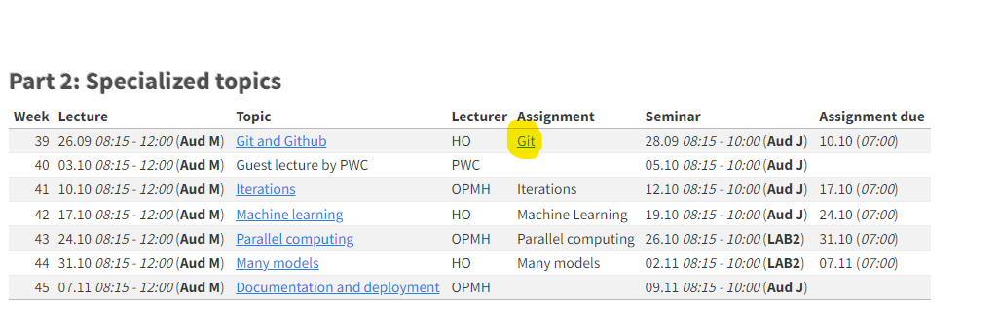
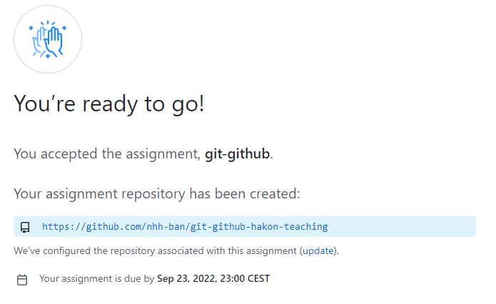
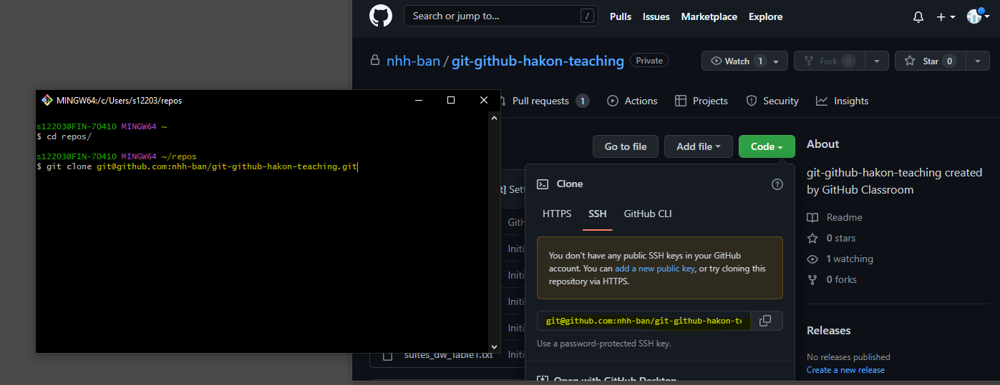
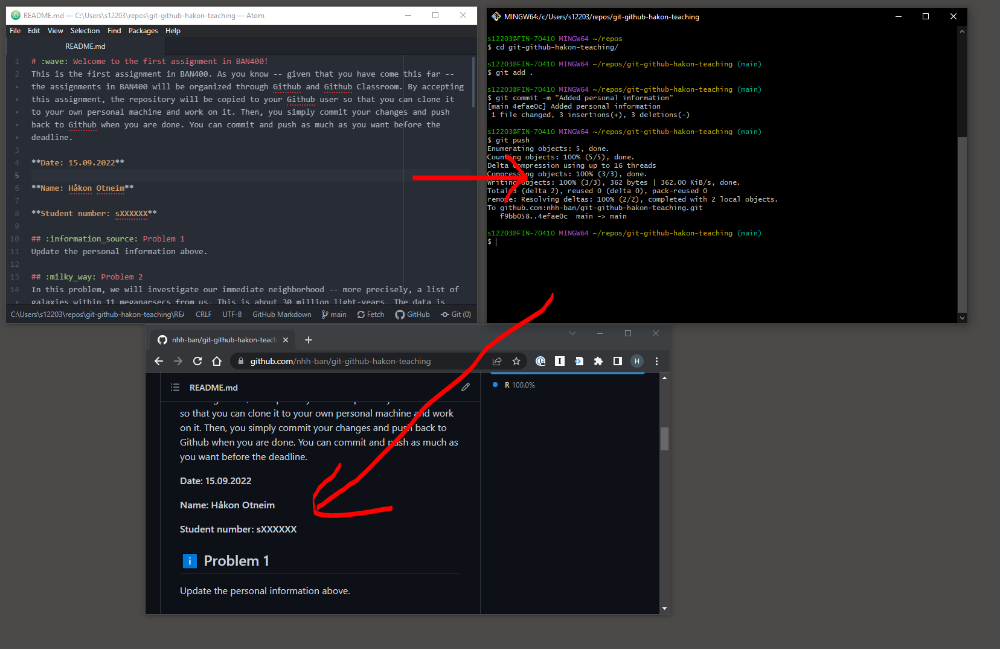

A guide to submitting assignments with Github Classroom
In the second half of the course, we will work with assignments as git repositories, and we will submit our work via Github Classroom. In the following guide we will see the steps needed to access, work with, and hand in the assignments.
- Step 1: Go through the basics of Git and Github by watching and following the video lessons.
- Step 2: Sign up to Github. As a student you are eligible for a free Github Pro account. This means, for instance, that you can keep your repositories private. Apply here.
- Step 3: Click on the assignment link when you will start working on it, for example:

- Step 4: Log into your Github account and choose your student number from the list in order to associate your account. The list of student numbers has been generated from the student roster of the course. If you do not find your number on the list, send an e-mail to hakon.otneim@nhh.no in order to fix it!
- Step 5: Press “Accept this assignment”.
- Step 6: After a few moments (you might have to refresh the page), you will see the page below, indicating that a repository has been made for you. This repository will be “owned” by the organization set up by us (“nhh-ban”), and the name of the repository will be {the name of the assignment}-{your user name}.

- Step 7: Click on the repository link to navigate to it. It will contain all you need to complete the assignment. The instructions are contained in the file README.md, which is typically displayed on the repository page. Clone the repository to your own machine by using the ssh link under “Code” in the upper right corner.

- Step 8: You can now work on the repository on your own machine. You can start by updating the readme file with your personal information, commit the changes and push them online. Verify that the online repository has been updated.

- Step 9: Make commits and push to the online repository as you see fit yourself as you are working. When you are done, you simply make a final commit, and a push.